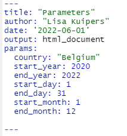
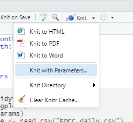
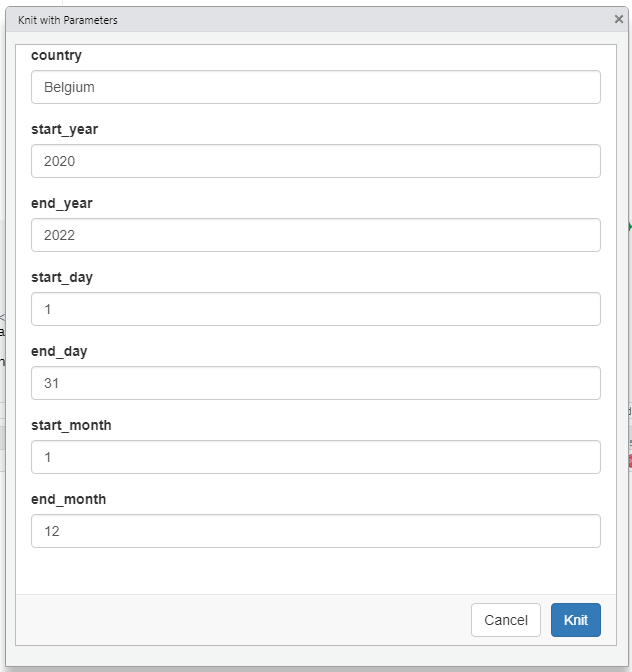

6 Parameters voor flexibiliteit



library(tidyverse)
library(ggplot2)
library(params)## Loading required package: whisker## Registered S3 method overwritten by 'params':
## method from
## print.knitr_kable knitr##
## Attaching package: 'params'## The following object is masked from 'package:kableExtra':
##
## kabledata_table <- read_csv("data/EDCC_daily.csv")## Rows: 24474 Columns: 11## -- Column specification --------------------------------------------------------
## Delimiter: ","
## chr (5): dateRep, countriesAndTerritories, geoId, countryterritoryCode, cont...
## dbl (6): day, month, year, cases, deaths, popData2020
##
## i Use `spec()` to retrieve the full column specification for this data.
## i Specify the column types or set `show_col_types = FALSE` to quiet this message.data_filtered <- data_table %>% filter(year >= params$start_year & year <= params$end_year & countriesAndTerritories == params$country & day %in% c(params$start_day:params$end_day) & month %in% c(params$start_month:params$end_month))
data_filtered$date_range <- paste0(data_filtered$year,data_filtered$month,data_filtered$day)
plot_func <- function(dataset,condition){
dataset %>% ggplot(aes(x=date_range, y=dataset[[condition]]))+
geom_point()+
scale_x_discrete(breaks=data_filtered$date_range[seq(1,length(data_filtered$date_range),by=50)])+
theme(axis.text.x = element_text(angle = 90))+
labs(x="Date",
y=condition,
title = paste("Amount of COVID-19",condition," from",data_filtered$dateRep[length(data_filtered$dateRep)],"to",data_filtered$dateRep[1]))
}plot_func(data_filtered,"cases")
plot_func(data_filtered,"deaths")## Warning: Removed 16 rows containing missing values (geom_point).